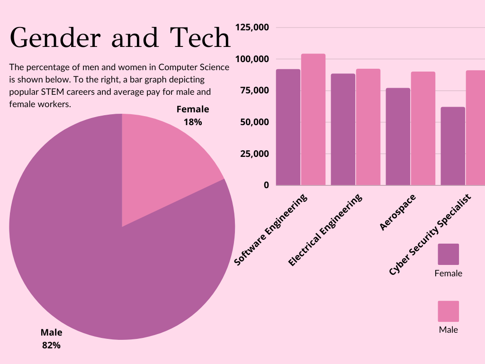

About Us
We are passionate about promoting gender equality in STEM fields. Our mission is to empower and support women in pursuing careers and education in Science, Technology, Engineering, and Mathematics, and to break down gender barriers in these fields.
Sometimes STEM is a blissful environment for women to freely express themselves and innovate creative solutions to modern tech problems. Sometimes though, STEM can have hard to breach barriers. While we have come a long way from where we started, it's still true that only around 18% of Computer Science degree recipients are women. In addition to that, about half of these women will quit their full-time STEM career within 4 to 7 years of becoming a parent, as the work culture is just not family oriented. This is why it is up to us to advocate for better work environments, flexible hours, and inclusion of women in all technology fields. To build a better world, we need all creative tech enthusists no matter what gender!
Resources
Explore our collection of resources, including articles, videos, and inspirational stories, to learn more about the importance of gender equality in STEM and ways to promote diversity and inclusion.
Interactive Learning
Practice coding with our coding playground! We also plan on adding coding puzzles to our website soon, so stay tuned!
Additionally, be sure to check out our #WomenInSTEM Simulation!
Statistics